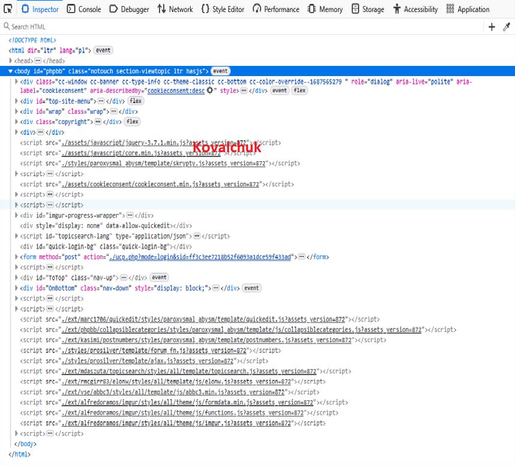
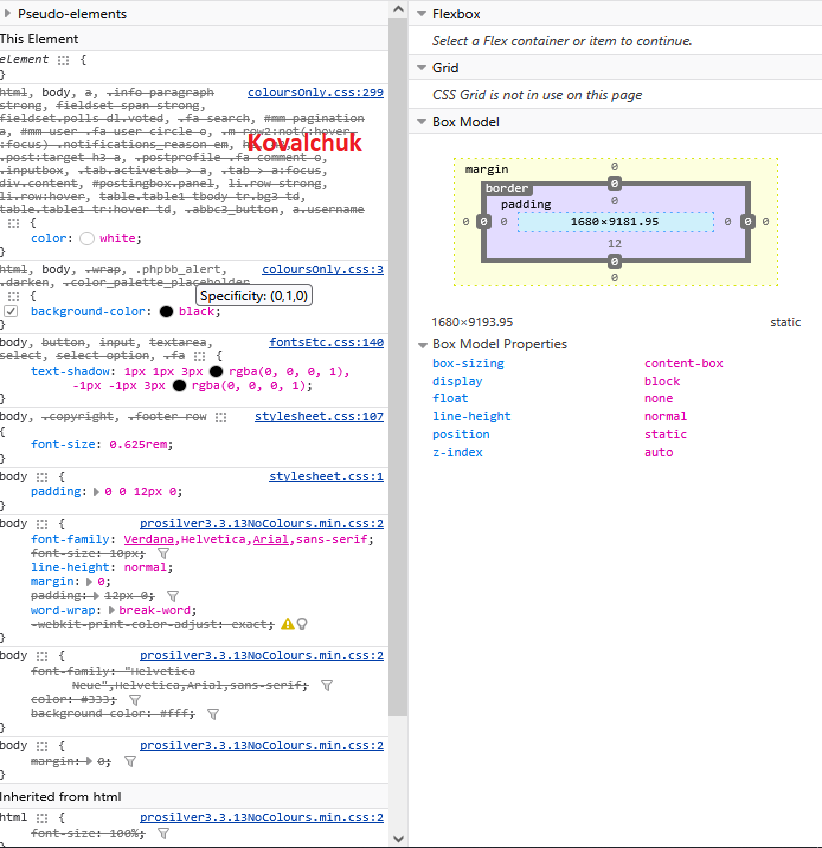

Kod
<!DOCTYPE html> <html lang="en"> <head> <meta charset="UTF-8"> <title>kova_z53</title> <style> h1{ font-style: italic; } h4{ font-weight: unset; } </style> </head> <body bgcolor="gray"> <h1>Do czego służy Pasek dewelopera, kiedy jest gotowy do użycia, wymień zakładki Paska developera. </h1><br> <ul> <b><u>Jest do dyspozycji użytkownika po zainstalowaniu przeglądarki.</u></b> <li> Elements / Inspector ← (to ten Inspektor opis patrz poniżej) </li> <li> Console (błędy i logi JavaScript) </li> <li> Network (ruch sieciowy) </li> <li>Sources (debugowanie kodu) </li> <li> Application / Storage (cookies, localStorage itd.)</li> To rozbudowane środowisko, które w 2026 roku staje się "rozszerzeniem IDE", oferując AI, analizę pamięci, zaawansowane dławienie sieci i ścisłą integrację z kodem źródłowym. Pozwala szybciej tworzyć lepsze witryny. Dokładny opis patrz Nowe możliwości <b>Web Developer Tools.</b> <h1>Do czego służy Inspektor Elements, w jakiej zakładce się znajduje, do czego służy?</h1> <h4>to podstawowe narzędzie do edycji wbudowane w przeglądarkę np. Firefox. <br> Służy głównie do: </h4> <li>podglądu struktury HTML strony </li> <li>edycji HTML i CSS „na żywo” </li> <li>sprawdzania stylów (kolory, marginesy, fonty) </li> <li>zaznaczania elementów na stronie </li> </ul> <p></p> <p></p> </body> </html> <!-- Kovalchuk Z53_html -->